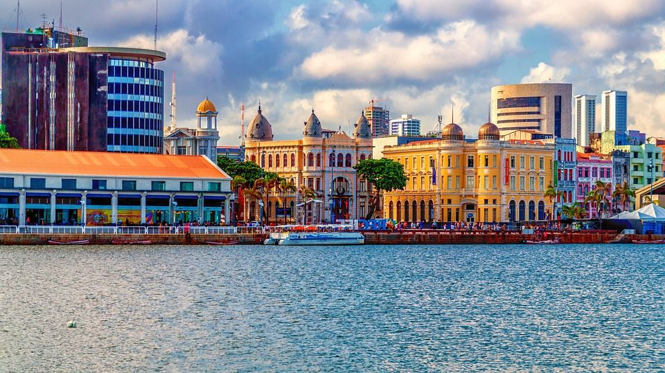
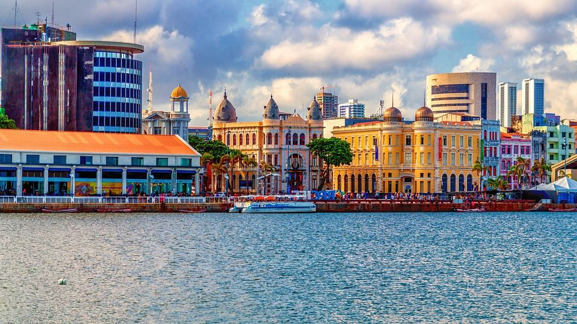

Bem-Vindo à Recife

O Marco Zero do Recife é um local icônico e simbólico situado na cidade do Recife, no estado de Pernambuco, Brasil. Trata-se de um marco geográfico que marca o ponto de origem de todas as medições de distância rodoviária a partir da cidade, e também é um local de grande importância histórica e cultural. Localizado na Praça Rio Branco, à beira do Rio Capibaribe, o Marco Zero é uma atração turística que atrai visitantes de todo o mundo. Ele consiste em uma placa com inscrições que indicam a distância em quilômetros para várias cidades brasileiras, bem como a direção em que se encontram. Além disso, há um imponente obelisco no local que é decorado com azulejos que representam a rica cultura e história de Pernambuco. Uma característica notável do Marco Zero é a grande bússola estilizada que se estende pelo chão, apontando as direções dos principais pontos cardeais. Isso é uma homenagem à importância do Recife como um centro de comércio e navegação no passado, quando a cidade desempenhou um papel fundamental na história da colonização portuguesa e no comércio de açúcar. Além de sua importância geográfica e histórica, o Marco Zero também é um local de eventos culturais e festividades, frequentemente utilizado para celebrações, apresentações artísticas e encontros populares. A vista para o Rio Capibaribe é espetacular, especialmente ao entardecer, criando um ambiente encantador para os visitantes. Em resumo, o Marco Zero do Recife é muito mais do que um simples ponto de referência geográfica; é um símbolo da rica herança cultural e histórica de Pernambuco, um local que combina tradição e modernidade, e um ponto de encontro para os residentes e visitantes que desejam celebrar a beleza e a diversidade desta cidade vibrante e acolhedora.
Suas Ruas
As ruas do Marco Zero do Recife são testemunhas silenciosas da evolução da cidade, preservando sua herança cultural enquanto se adaptam ao dinamismo da vida contemporânea. Passear por essas ruas é uma oportunidade de explorar o passado, vivenciar o presente e sentir a essência única da cidade, onde o encontro de culturas e a energia pulsante se entrelaçam em uma experiência inesquecível.

 


Galo da Madrugada
O Galo da Madrugada é uma das maiores e mais icônicas manifestações culturais do Carnaval brasileiro. Fundado em 1978 na cidade de Recife, Pernambuco, essa agremiação representa uma parte significativa da rica tradição carnavalesca do Nordeste do Brasil. A história do Galo da Madrugada começa com a ideia de um grupo de amigos apaixonados pelo Carnaval de Recife. Eles decidiram criar um bloco que fosse grandioso e que pudesse rivalizar com os blocos tradicionais da cidade, como o famoso Galo da Madrugada. O nome "Galo da Madrugada" foi escolhido em homenagem ao bloco original, que já era um ícone da folia pernambucana. O primeiro desfile do Galo da Madrugada aconteceu no dia 22 de fevereiro de 1978, e surpreendeu a todos pela sua grandiosidade. Desde então, o bloco cresceu exponencialmente e se tornou o maior bloco de Carnaval do mundo, registrando o feito no Livro dos Recordes Guinness em 1995. O Galo da Madrugada é conhecido por seu gigantesco galo inflável, que é o símbolo do bloco e se tornou um ícone do Carnaval de Recife. O desfile, que ocorre sempre no sábado de Carnaval, atrai milhares de foliões que se vestem com trajes coloridos e criativos para celebrar a festa nas ruas da cidade. Além das tradicionais marchinhas de Carnaval, o Galo da Madrugada incorpora elementos da cultura pernambucana em seu desfile, incluindo o frevo, maracatu e outros ritmos locais. A música e a dança desempenham um papel fundamental nessa celebração, e artistas renomados muitas vezes se apresentam durante o desfile, tornando o evento ainda mais especial. O Galo da Madrugada é uma manifestação cultural que une gerações e transcende fronteiras, atraindo visitantes de todo o Brasil e do mundo para o Carnaval de Recife. É uma celebração de alegria, música, dança e, acima de tudo, da rica herança cultural do Nordeste brasileiro, que é vivida com paixão e entusiasmo a cada ano.